ヨーロッパの誕生⑤（中世ヨーロッパの文化）
中世のヨーロッパでは「哲学は神学の侍女」という言葉の通り、キリスト教の神学が全ての学問の最上位に置かれていました。やがて十字軍などを通じてイスラーム世界から高度な学問が流入すると、大学が誕生し、神学と哲学の分離など新たな学問の展開が見られるようになります。
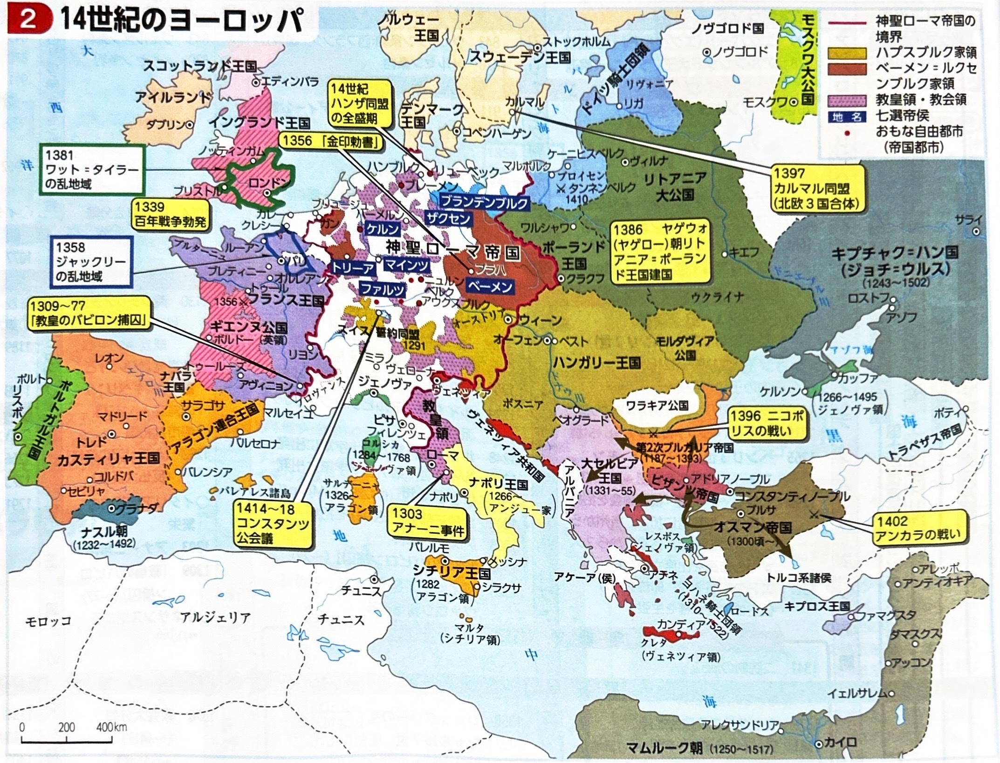
1. イギリス毛織物産業の発展と交易の中心移動
ヨーロッパ経済史における重要な補足です。14世紀頃まで、イギリスは羊毛を生産して先進地であるフランドル地方（中心はブリュージュ）へ輸出していました。しかし百年戦争を機にフランドルの織工がイギリスへ移住し、15世紀にはイギリス国内での毛織物生産が本格化します。
このイギリス産毛織物を積極的に受け入れ、仕上げ加工を施して販売したのがフランドル地方のアントウェルペンでした。これにより、国際経済の中心地はブリュージュからアントウェルペンへと移っていきました。
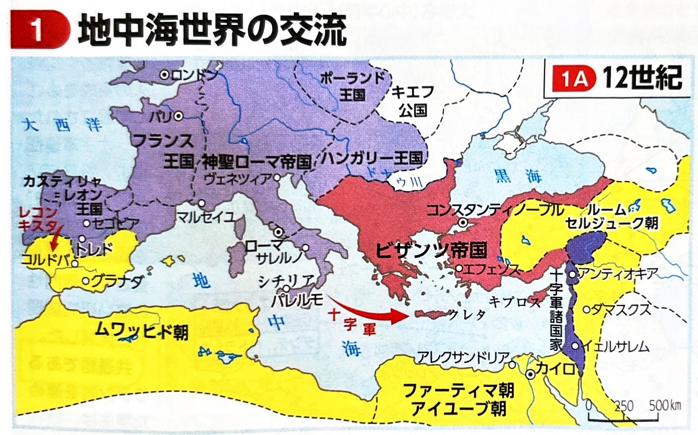
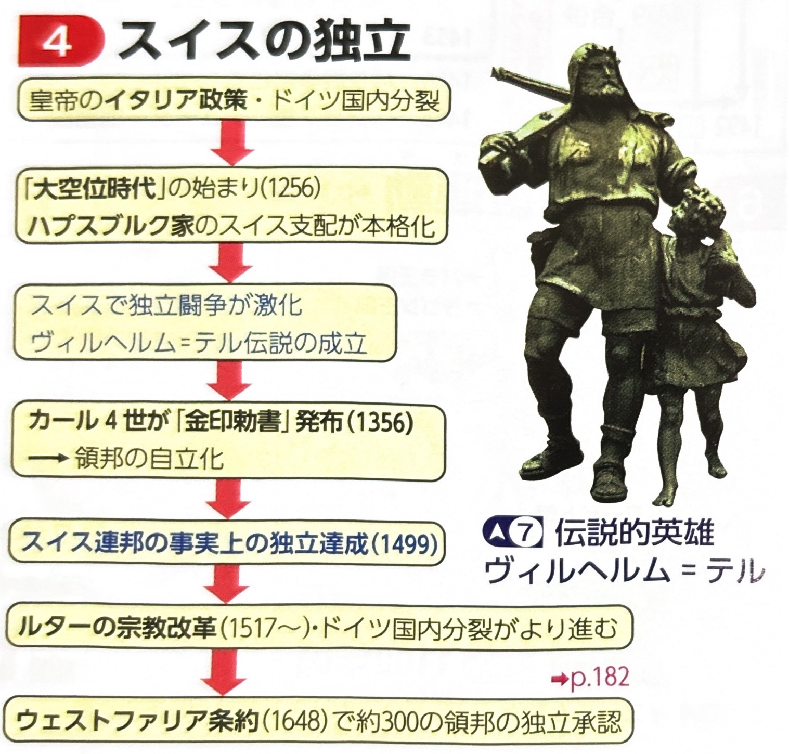
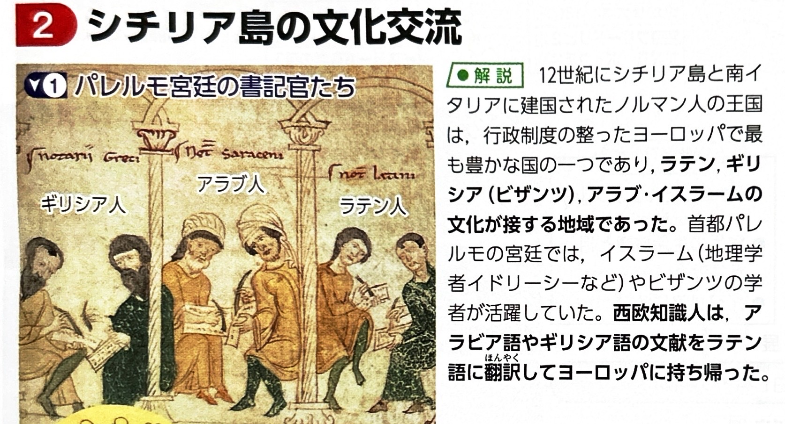
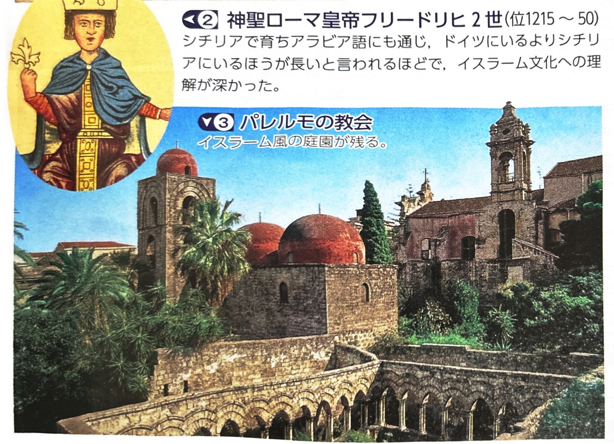
2. スコラ学と普遍論争
中世のキリスト教神学と哲学を融合させた学問をスコラ学と呼びます。「神の存在や信仰の教義を、理性（哲学）でどう説明するか」が問われ、特に11〜12世紀にかけて「普遍論争」と呼ばれる激しい対立が起こりました。
| 立場・人物 | 主張と特徴 |
|---|---|
| 実在論 アンセルムス（英） |
「普遍が個物の前にまず実体として存在する」という立場。信仰の優位を説き、彼自身は「スコラ学の父」と呼ばれました。（教皇権の確立期に合致） |
| 唯名論（名目論） アベラール（仏） |
「普遍は実在せず、単なる名称（言葉）にすぎない」という立場。個物を認識する理性や知性を重んじました。 |
| 調停と大成 トマス＝アクィナス（伊） |
13世紀、パリ大学教授であった彼は主著『神学大全』を著し、イスラーム世界から伝わったアリストテレス哲学を導入して、信仰と理性の調和を図りました。 |
| 経験論の先駆 ロジャー＝ベーコン（英） |
イスラーム科学の影響を受け、実験や観察を重視しました。（"驚異博士"と呼ばれ、晩年は異教徒の嫌疑で投獄されました。） |
| 唯名論の勝利 ウィリアム＝オブ＝オッカム（英） |
14世紀、理性を信仰から分離（哲学は神学から自立する）し、近代合理思想への道を開きました。（※教皇権が動揺する時期と重なります。） |
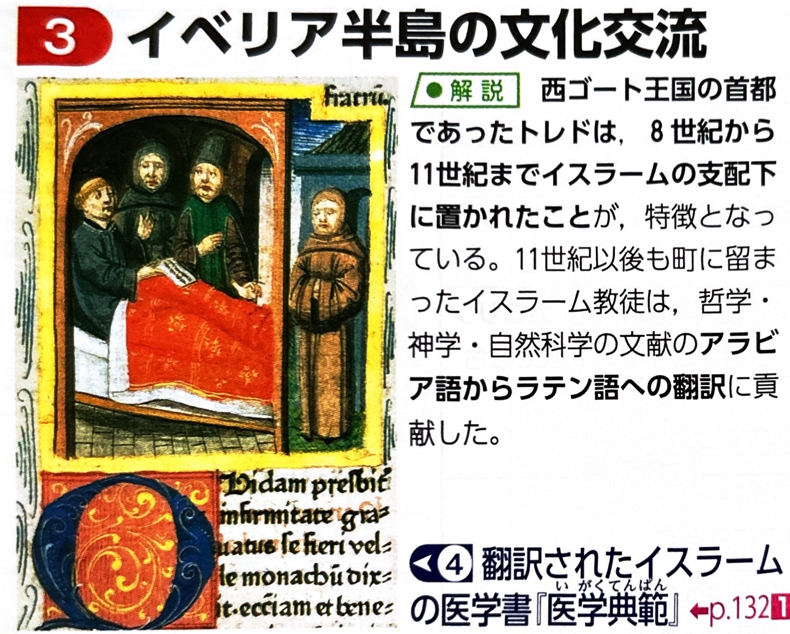
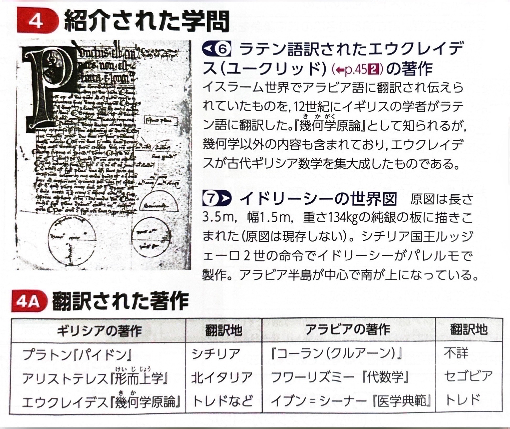
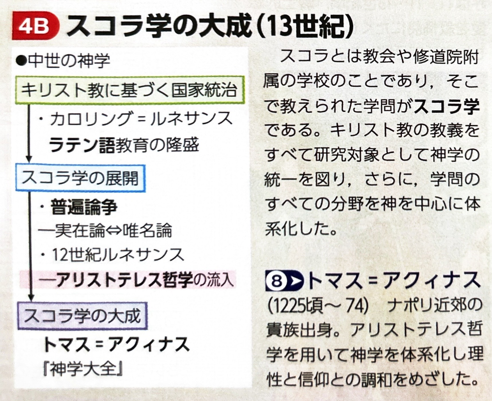
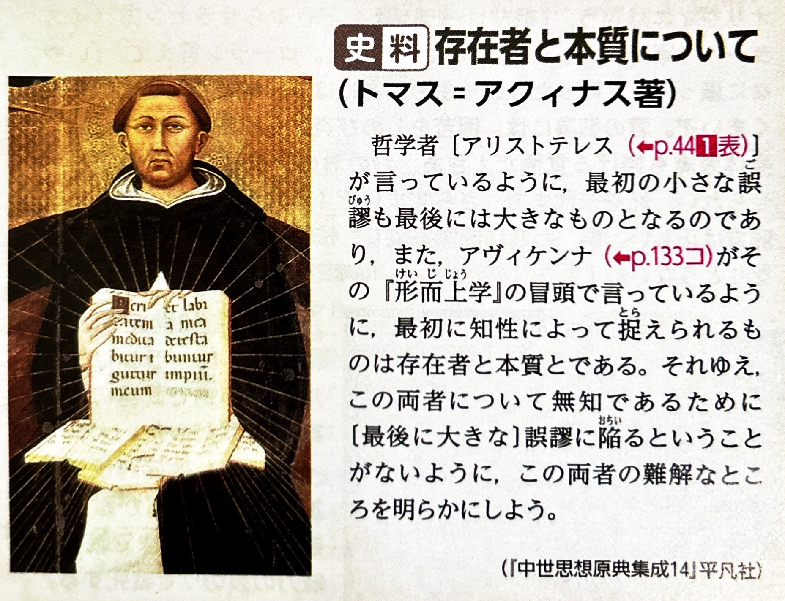
3. 12世紀ルネサンスと大学の誕生
十字軍遠征以降、西ヨーロッパはビザンツ帝国やイスラーム世界からの文化的刺激を受けました。特に、イベリア半島のトレド（翻訳の中心地）やシチリア島のパレルモなどを経由して、アリストテレスなどのギリシア古典がアラビア語からラテン語に翻訳されました。この知的な活性化を「12世紀ルネサンス」と呼びます。
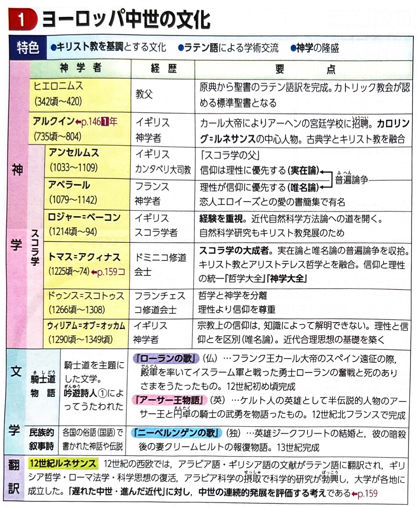
【大学（ウニヴェルシタス）の設立】
学問の発展に伴い、教授や学生によるギルド（組合）として大学が誕生しました。公用語はラテン語で、神学・法学・医学・哲学の4学部と、基礎となる七自由学科（文法、修辞、弁証法、算術、幾何、天文、音楽）から構成されました。
| 大学名・国 | 設立と特徴 |
|---|---|
| ボローニャ大学（伊） | 11世紀に学生組合から発足した、法学研究の最高権威。 |
| サレルノ大学（伊） | 11世紀設立。アラビア医学の影響を強く受けた、医学研究の中心。 |
| パリ大学（仏） | 12世紀に教授組合から発足した、神学・哲学研究の最高権威。トマス＝アクィナスらも教授を務めました。 |
| オックスフォード大学（英） | 12世紀、パリ大学の教授や学生が移住して設立された神学の中心。ここからさらに分かれて13世紀にケンブリッジ大学が設立されました。 |
| ナポリ大学（伊） | 13世紀、神聖ローマ皇帝フリードリヒ2世によって創設。 |
| プラハ大学（チェコ） | 14世紀、神聖ローマ皇帝カール4世（ベーメン王）によって創設。 |
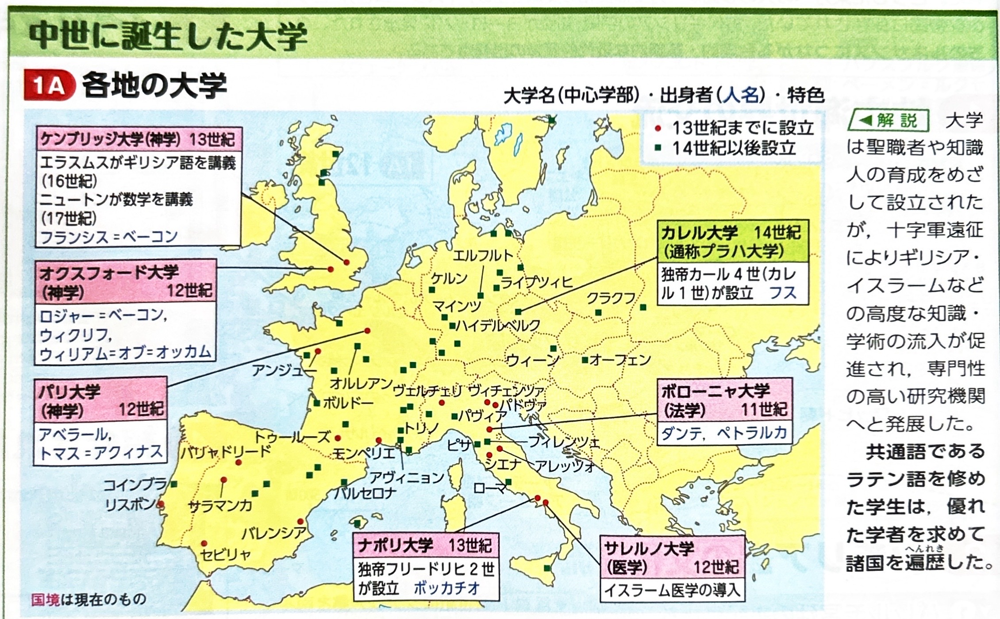
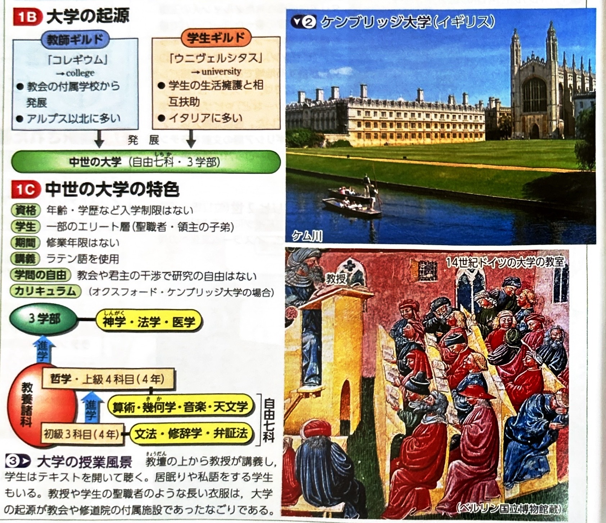
4. 中世の建築様式（ロマネスクからゴシックへ）
中世の教会建築は、人々の信仰心を集める重要な手段であり、時代とともに様式が変化しました。
| 様式と時期 | 特徴と代表的な建築物 |
|---|---|
| ロマネスク様式 （11世紀〜） |
・特徴：陽光まぶしい地中海（イタリア）から発祥。厚い壁、小さな窓、半円アーチを持ち、内部は暗く厳かなムード。壁面には文字の読めない民衆を教化するための壁画（フレスコ画）が描かれました。 ・代表例：ピサ大聖堂（伊）、ヴォルムス大聖堂（独）。 |
| ゴシック様式 （12世紀〜） |
・特徴：日照の少ない北フランスから発祥。薄い壁、大きな窓、尖頭アーチと穹隆（ヴォールト）構造が特徴。窓には美しいステンドグラスが飾られ、天に伸びる高い尖塔が人々を天上の高みへと誘いました。 ・代表例：シャルトル大聖堂（仏）、ノートルダム大聖堂（仏）、アミアン大聖堂（仏）、ケルン大聖堂（独）。 |
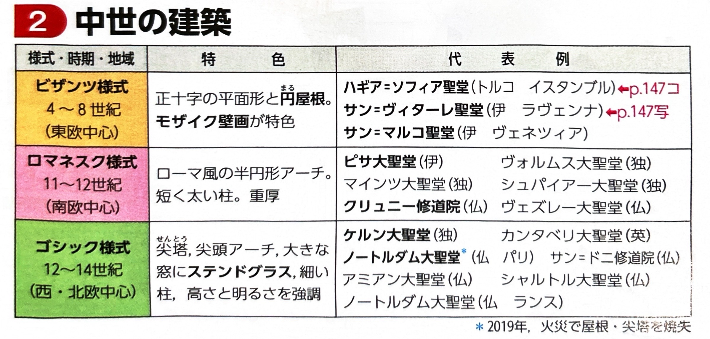
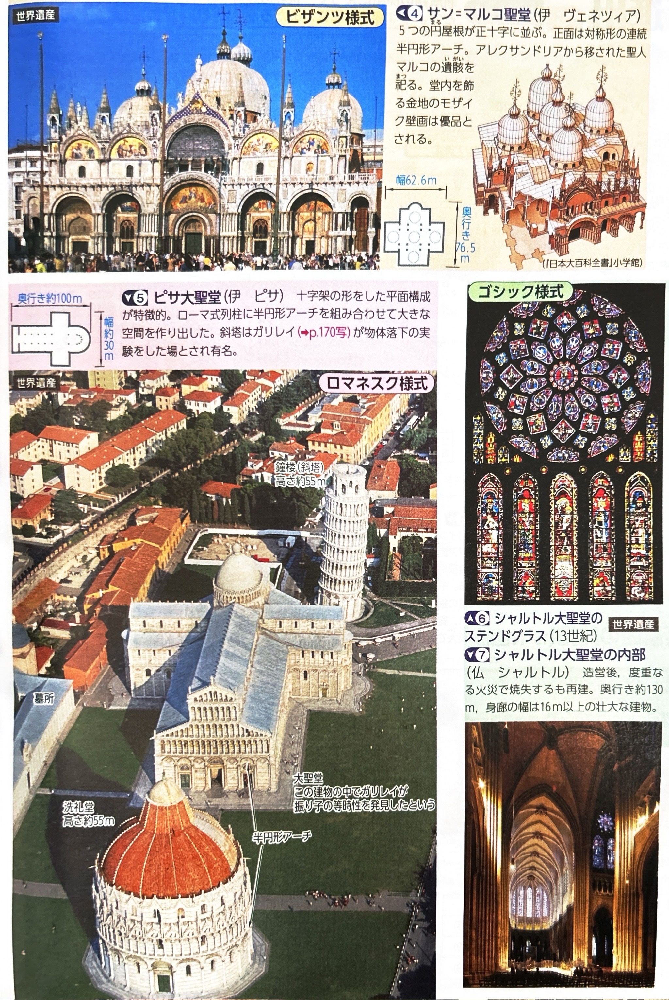
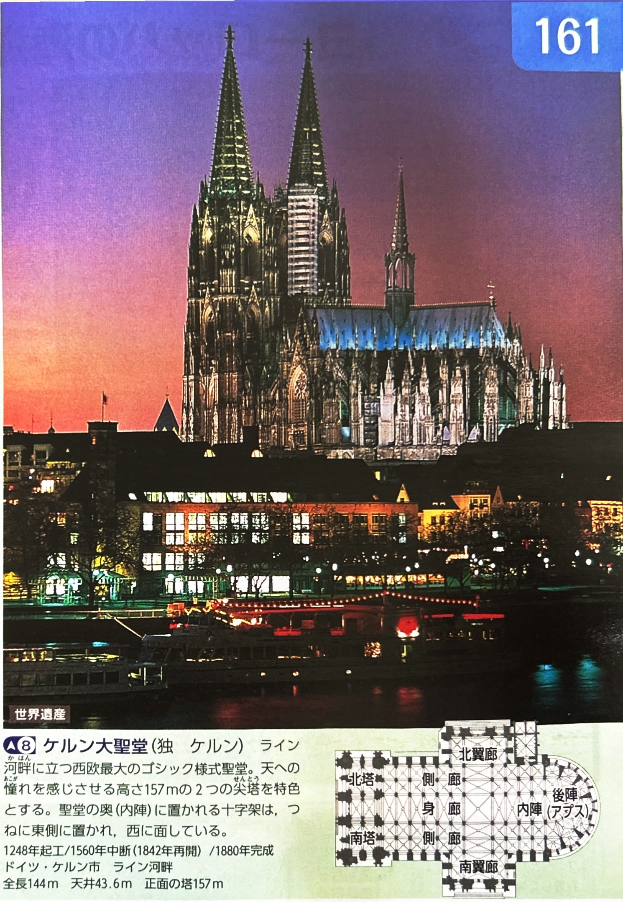
5. 中世の文学（騎士道物語と英雄叙事詩）
十字軍の時代には、騎士の武勇や忠誠、恋愛をテーマにした騎士道文学や、各民族の英雄伝説が各国の言葉（俗語）で書かれるようになりました。
- 『ローランの歌』（フランス）：フランク王国のカール大帝のイベリア遠征を題材に、甥ローランの戦死を悼む武勲詩。
- 『アーサー王物語』（イギリス・フランス）：アングロ＝サクソン人の侵入に対抗したとされる先住ケルト人の英雄アーサー王と、円卓の騎士の伝説。
- 『ニーベルンゲンの歌』（ドイツ）：ゲルマン人の英雄ジークフリートの暗殺と、その妻の復讐を描いた悲劇。作中にはフン人の王アッティラ（エッツェル）も登場します。